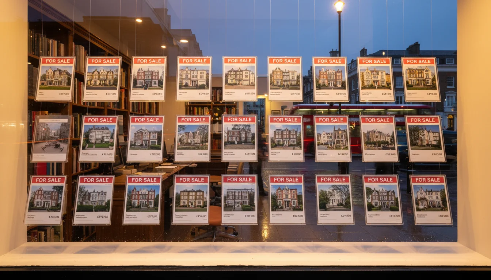

איך קונים נכס בלונדון - התהליך מקצה לקצה
למה התהליך בלונדון שונה מישראל
המאמר הזה מתמקד בצד הפרוצדורלי של הרכישה - מהצעה ועד מפתח. אם אתם בשלב מוקדם יותר ורוצים את התמונה הרחבה של השוק, המחירים, והמיסוי לישראלים, תתחילו בנדלן בלונדון לישראלים - סקירת שוק. כאן נכנסים כשכבר מבינים מה קונים ורוצים לדעת איך קונים.
בישראל, חותמים על זיכרון דברים ויש לכם עסקה. שני הצדדים מחויבים. בלונדון - לא ככה.
קניית דירה בלונדון תהליך שונה מהיסוד ממה שמכירים בישראל. ההבדל הכי גדול? שום דבר לא מחייב עד שלב ה- exchange of contracts. אתם יכולים למצוא דירה, להציע מחיר, לקבל אישור מהמוכר, לשכור solicitor, לשלם על בדיקות - ובאמצע כל זה, המוכר יכול לקבל הצעה גבוהה יותר ולזרוק אתכם. זה נקרא gazumping, וזה חוקי לגמרי.
עוד הבדל: בלונדון יש שני תאריכים לסגירת עסקה, לא אחד. exchange of contracts הוא הרגע שההסכם נכנס לתוקף. completion הוא הרגע שמקבלים מפתח. בין שני התאריכים האלה יכולים לעבור שבועות. ישראלים שמגיעים עם הראש של "חותמים ומקבלים מפתח" צריכים להסתגל.
ובלונדון, ה- solicitor שמטפל ברכישה הוא לא "עורך הדין" במובן הישראלי. הוא לא יועץ שיושב אתכם ונותן עצות אסטרטגיות. הוא עושה conveyancing - עבודה משפטית פרוצדורלית ספציפית: בדיקות, חוזים, העברת בעלות. רוב העבודה היא מול ה- solicitor של הצד השני, לא מולכם.
תהליך קניית דירה בלונדון - השלבים מחיפוש ועד מפתח

התהליך לוקח בדרך כלל שלושה עד ארבעה חודשים מרגע שההצעה מתקבלת. אם אתם חלק מ- chain - שרשרת של קונים ומוכרים שכל אחד מהם תלוי בעסקה של האחר - זה יכול להימשך חצי שנה ויותר.
חיפוש נכס - Rightmove ו- Zoopla הם המקומות שמתחילים בהם. שניהם חינמיים, אפשר לסנן לפי שכונה, מחיר, מספר חדרים. אפשר גם לעבוד עם buying agent - סוכן שעובד בשבילכם כקונים, לא בשביל המוכר. אם אתם קונים מישראל, buying agent מקצועי שמכיר את השכונות יכול לחסוך לכם טיסות מיותרות ולזהות בעיות שאתם לא תראו ב- Zoom. כדאי לקרוא על השכונות שישראלים קונים בהן בלונדון לפני שמתחילים לחפש.
חשוב להבין: ה- estate agent בלונדון עובד בשביל המוכר, לא בשבילכם. הוא מנסה להשיג את המחיר הגבוה ביותר. הוא אדיב, הוא מראה לכם נכסים, אבל האינטרס שלו לא תואם את שלכם. buying agent הוא ההפך - הוא בצד שלכם. עלות: בדרך כלל 1-3% ממחיר הנכס.
הצעת מחיר - מציעים מחיר, בדרך כלל מתחת למחיר המבוקש. בלונדון, ה- asking price הוא נקודת פתיחה, לא מחיר סופי. בשוק רגוע, הצעה של 5-10% מתחת למחיר סבירה. בשוק חם, לפעמים צריך להציע מעל. אם המוכר מסכים, ה- estate agent שולח memorandum of sale - מסמך שמפרט את פרטי העסקה. אבל שימו לב: ההסכם הזה לא מחייב. שום דבר לא מחייב עד exchange.
מינוי solicitor - ברגע שההצעה מתקבלת, צריך למנות solicitor שיעשה את ה- conveyancing. כדאי שיהיה לכם אחד מוכן מראש. עלות: בין 1,500 ל-3,000 פאונד בתוספת VAT.
משכנתה - אם צריך מימון, כדאי להשיג Mortgage Agreement in Principle עוד לפני שמתחילים לחפש. זה מראה למוכרים שאתם רציניים ומוכנים. בנקים בריטיים נותנים משכנתאות לתושבי חוץ, אבל התנאים שונים: ריבית גבוהה יותר, מקדמה גדולה יותר (בדרך כלל 25-40% מערך הנכס), ותהליך אישור ארוך יותר. הרבה ישראלים מגיעים עם cash ומדלגים על השלב הזה. אם אתם ממומנים - זה יתרון אמיתי בעיני המוכר.
בדיקות (searches) - ה- solicitor שלכם מפעיל סדרה של searches: local authority search שבודק תכנון ואישורי בנייה, environmental search שבודק סכנות הצפה וזיהום קרקע, ו- drainage search שבודק חיבור למים וביוב. הבדיקות לוקחות שבועיים עד שישה שבועות, תלוי בקצב של הרשות המקומית.
survey - בדיקת הנכס עצמו. על זה בהמשך.
exchange of contracts - החתימה שמחייבת. מעכשיו אף אחד לא יכול לצאת מהעסקה. משלמים מקדמה, בדרך כלל 10% ממחיר הנכס. קובעים תאריך completion.
completion - יום המפתח. הכסף עובר, הבעלות עוברת, אתם הבעלים. מרגע זה, הנכס שלכם - וגם האחריות עליו.
מה זה conveyancing ולמה צריך solicitor
Conveyancing זה התהליך המשפטי של העברת בעלות על נכס מצד אחד לצד שני. בבריטניה, אי אפשר לעשות את זה בלי solicitor או conveyancer מוסמך.
מה ה- solicitor שלכם עושה בפועל? הוא בודק שה- title של הנכס נקי - שאין שעבודים, חובות, או בעיות משפטיות. הוא מריץ את ה- searches. הוא קורא את החוזה שמכין ה- solicitor של המוכר ומעלה שאלות - enquiries - על כל דבר שלא ברור. הוא מוודא שתנאי המשכנתה מתקיימים. ובסוף, הוא מעביר את הכסף ורושם את הבעלות ברשם הקרקעות.
אם הנכס הוא leasehold - וזה רוב הדירות בלונדון - ה- solicitor גם בודק את תנאי ה- lease: כמה שנים נשארו, מה ה- service charge השנתי, מה ה- ground rent, ומה מותר ומה אסור לעשות בדירה. להבנה של ההבדל בין leasehold ל- freehold ולמה זה קריטי, שווה לקרוא את המדריך על ליסהולד או פריהולד.
ה- searches שה- solicitor מריץ הם קריטיים:
| בדיקה | מה חושפת |
|---|---|
| local authority | בעיות תכנון, צווי שימור, כבישים מתוכננים, listed buildings, הגבלות בנייה |
| environmental | סיכוני הצפה, זיהום קרקע, בעיות סביבתיות (אזורים ליד התמזה - שימו לב) |
| drainage | חיבור למים וביוב ציבורי, צינורות ציבוריים תחת הנכס, זכויות גישה של הרשות |
הבדיקות האלה לוקחות בין שבועיים לשישה שבועות, ולפעמים יותר. זה אחד הדברים שמאטים את התהליך ומתסכלים ישראלים - אבל אין קיצורי דרך. ה- solicitor לא יתן לכם להתקדם בלעדיהם.
 ליסהולד או פריהולד - מה ההבדל ולמה זה קריטיleasehold ו-freehold - שני סוגי בעלות על נכס בלונדון שישראלים מגלים מאוחר מדי. מה ההבדל, למה אורך החכירה קריטי, ומה לבדוק לפני קניית דירה בלונדון
ליסהולד או פריהולד - מה ההבדל ולמה זה קריטיleasehold ו-freehold - שני סוגי בעלות על נכס בלונדון שישראלים מגלים מאוחר מדי. מה ההבדל, למה אורך החכירה קריטי, ומה לבדוק לפני קניית דירה בלונדון
stamp duty - איפה זה נכנס בתהליך
Stamp Duty Land Tax הוא המס שמשלמים על רכישת נכס באנגליה. ישראלי שקונה דירה שנייה בלונדון משלם את המדרגות הבסיסיות, פלוס 2% תוספת לתושבי חוץ, פלוס 5% תוספת לנכס נוסף. על נכס של שני מיליון פאונד זה מגיע לכמעט 15% ממחיר הנכס.
את הפירוט המלא - טבלת מדרגות, דוגמה מספרית, ותנאי ההחזר לתושבי חוץ שמתיישבים בבריטניה - כתבתי במקום אחד: נדלן בלונדון לישראלים - מחירים ומיסוי. כאן מעניין אותנו רק איפה זה נכנס בתהליך.
בפועל: ה- solicitor גובה מכם את ה- stamp duty בזמן ה- completion, ומעביר ישירות ל- HMRC בתוך 14 ימים. אין לכם מה לעשות בנדון - הוא מטפל. אבל חייבים לתקצב את זה מראש, כי זה חלק משמעותי מהעלות הכוללת של העסקה. והתוספות לתושב חוץ ולנכס נוסף הן המרכיב הכי גדול שישראלים מתקשים לצפות מראש.
פירוט של עלויות נוספות שמחכות אחרי הרכישה - העלויות שאף אחד לא מספר לכם על נכס בלונדון.
survey - הבדיקות שחייבים לעשות
Survey בבריטניה זה לא "בדיקת שמאי" כמו בישראל. זו בדיקה רצינית של מצב הנכס הפיזי, שעושה surveyor מוסמך של RICS.
יש שלוש רמות:
| רמה | מתאימה ל- | מה בודקת | עלות |
|---|---|---|---|
| Level 1 - Condition | נכסים חדשים ומודרניים במצב טוב | דו"ח בסיסי, בלי פירוט רב | - |
| Level 2 - HomeBuyer | נכסים סטנדרטיים במצב סביר | בעיות נראות, רטיבות, שקיעות, מצב הגג | 400-1,000 פאונד |
| Level 3 - Building | נכסים ישנים, גדולים, listed, לפני שיפוץ גדול | מבנה, צנרת, חשמל, אסבסט, ליקויים מוסתרים | 800-1,500+ פאונד |
אם אתם קונים דירה ויקטוריאנית ב- Hampstead או בית ג'ורג'יאני ב- Primrose Hill - ואלה הנכסים שישראלים בדרך כלל קונים - אתם צריכים Level 3. בלי ויכוח. בניין בן 150 שנה מסתיר דברים שרק בדיקה מלאה תגלה: בעיות קונסטרוקציה, רטיבות כרונית, צנרת עופרת, חיווט ישן. הבדיקה עולה מאות פאונד, אבל יכולה לחסוך לכם עשרות אלפים.
חשוב לדעת: ה- survey לא חובה חוקית. אבל כל solicitor שווה את הכסף שלו ייעץ לכם לעשות אחד. ואם מוצאים בעיות - אפשר לנהל מחדש על המחיר, או לצאת מהעסקה (לפני exchange, כמובן).
exchange ו-completion - למה יש שני תאריכים
זה הדבר שהכי מבלבל ישראלים. בישראל, חותמים על חוזה ומקבלים מפתח. בלונדון, יש שני אירועים נפרדים.
Exchange of contracts - הרגע שהעסקה נכנסת לתוקף. שני הצדדים חותמים על חוזים זהים, ה- solicitors מחליפים אותם, ומרגע זה - שני הצדדים מחויבים חוקית. אם הקונה חוזר בו אחרי exchange, הוא מפסיד את המקדמה (10%). אם המוכר חוזר בו, הוא חשוף לתביעה. ב- exchange משלמים את המקדמה וקובעים תאריך completion.
Completion - בדרך כלל שבוע עד שבועיים אחרי exchange, אבל יכול להיות גם באותו יום או אחרי חודש. ביום הזה, ה- solicitor שלכם מעביר את יתרת הכסף ל- solicitor של המוכר. ברגע שהכסף מגיע, אתם מקבלים מפתח. זה קורה בדרך כלל סביב שעות הצהריים.
למה הפיצול הזה קיים? כי בבריטניה, הזמן בין exchange ל- completion מאפשר לשני הצדדים להתכונן: המוכר אורז ועוזב, הקונה מארגן ביטוח (שצריך להיות בתוקף מרגע ה- exchange), ומוודא שהכסף מוכן.
למשפחות ישראליות שקונות דירה שנייה, הפיצול הזה דווקא נוח. אפשר לתכנן טיסה ולהגיע ליום ה- completion עם הילדים, כשהכל כבר סגור. אפשר להתחיל לתכנן עם מעצבת שמכירה את המערכת מבפנים עוד לפני completion - למדוד, לצלם, לתכנן חדרי ילדים ומרחבים משותפים. ההפרדה בין exchange ל- completion נותנת לכם חלון תכנון שלא היה לכם אם הכל היה קורה ביום אחד.
ועוד דבר: בין exchange ל- completion, הנכס כבר בטוח שלכם. אף אחד לא יכול לקחת אותו. אפשר לנשום.
הטעויות הנפוצות של קונים ישראלים
לחשוב שההצעה מחייבת - הטעות הכי נפוצה. ישראלים מגיעים עם המנטליות של "דיברנו, לחצנו ידיים, יש עסקה." בלונדון, עד exchange אין שום דבר. המוכר יכול לקבל הצעה גבוהה יותר מחר ולהגיד לכם ביי. אפשר לבקש שהנכס יורד מהשוק אחרי שההצעה מתקבלת, ואפשר לבקש lockout agreement שנותן לכם בלעדיות לתקופה מסוימת - אבל המוכר לא חייב להסכים.
הבריטים בנו מערכת שבה שום דבר לא מחייב עד שהכל בדוק ומוכן. זה מתסכל, אבל יש בזה הגיון: לא חותמים בלי לדעת בדיוק מה קונים. הישראלי שבכם ירצה לרוץ. אל תרוצו. תנו לתהליך לעשות את שלו.
לדלג על survey - "הדירה נראית מצוין, למה לשלם אלף פאונד על בדיקה?" כי בניין ויקטוריאני בן 130 שנה יכול להסתיר בעיות שעולות עשרת אלפים ויותר לתיקון. צנרת עופרת, אסבסט בתקרות, שקיעת יסודות, חיווט לא תקני. ה- survey הוא הביטוח הכי זול שתקנו.
לא להבין chain - אם המוכר שלכם צריך למכור את הנכס שלו כדי לקנות נכס אחר, והקונה של אותו נכס גם צריך למכור - זו chain. שרשרת שיכולה להגיע לארבע-חמש עסקאות שתלויות אחת בשנייה. ואם חוליה אחת נופלת - הכל נעצר. chain של ארבע עסקאות יכולה לקרוס בגלל בעיה ב- survey של נכס שאתם אפילו לא יודעים שהוא קיים.
ישראלים שקונים דירה שנייה בלי למכור נכס בלונדון נמצאים ביתרון: אתם chain-free. למוכר, זה אומר עסקה פשוטה יותר ומהירה יותר. זה יתרון אמיתי במשא ומתן - ולפעמים שווה הנחה של כמה אחוזים.
לא להכין solicitor מראש - רגע שההצעה מתקבלת, התהליך מתחיל לזוז. אם אתם מחפשים solicitor רק אז, אתם מאבדים שבועות. כדאי שיהיה לכם אחד מוכן מראש, רצוי כזה עם ניסיון בעבודה עם קונים מחו"ל.
לא לבדוק את התכנון - קניתם דירה, התחלתם לחלום על שיפוץ, ואז מגלים שהבניין נמצא ב- conservation area ואי אפשר לשנות חלונות. או שצריך אישור planning permission על כל שינוי בחזית. בדיקה פשוטה לפני הרכישה יכולה לחסוך חודשים של תסכול.
אם כל זה נשמע כמו הרבה - זה כי זה הרבה. אחרי יותר מעשרים שנה בלונדון אני מכירה את כל הלכודות האלה מקרוב - ויודעת איך לעקוף אותן.
- שום דבר לא מחייב עד exchange of contracts. 37% מהקונים בבריטניה נפגעים מ- gazumping - המוכר מקבל הצעה גבוהה יותר וזורק אתכם
- התהליך לוקח 3-4 חודשים מהצעה עד מפתח. עם chain - חצי שנה ויותר
- אתם chain-free כקונה דירה שנייה - יתרון אמיתי במשא ומתן, לפעמים שווה הנחה של כמה אחוזים
- Building Survey (Level 3) לנכס ויקטוריאני - לא אופציונלי. 800-1,500 פאונד שיכולים לחסוך עשרות אלפים
- stamp duty לישראלי כולל תוספות של 2% (תושב חוץ) + 5% (נכס נוסף). הפירוט המלא בנדלן בלונדון לישראלים
אם אתם עדיין בשלב של לפני, כדאי לקרוא על מה לבדוק לפני שחותמים על נכס בלונדון. ואחרי שקניתם? איך לנהל שיפוץ בלונדון מישראל מסביר את השלב הבא.
רכישת נכס באנגליה זה תהליך ארוך יותר, מסורבל יותר, ויקר יותר ממה שישראלים רגילים אליו. אבל יש בו הגיון. כל שלב בנוי כדי להגן עליכם כקונים - גם אם לא תמיד מרגיש ככה. מי שמבין את המערכת - ואחרי יותר מעשרים שנה בלונדון אני יכולה להגיד שלוקח זמן להבין אותה - מכין solicitor מראש, מתקצב נכון, ולא מדלג על survey - עובר את זה. מי שלא? לומד את זה בדרך הקשה.